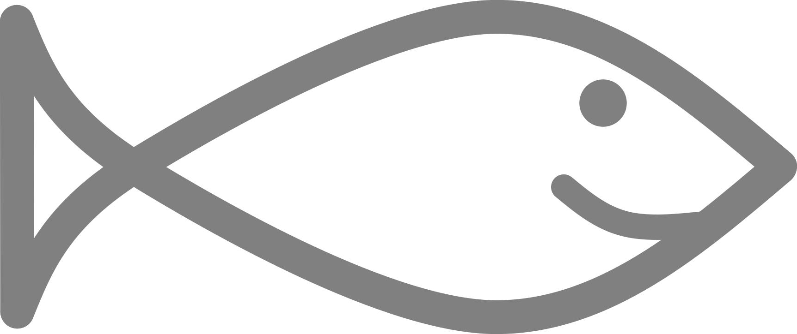
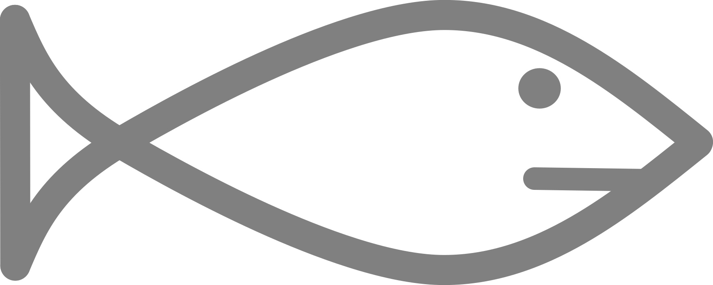
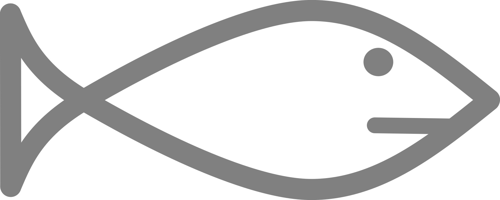
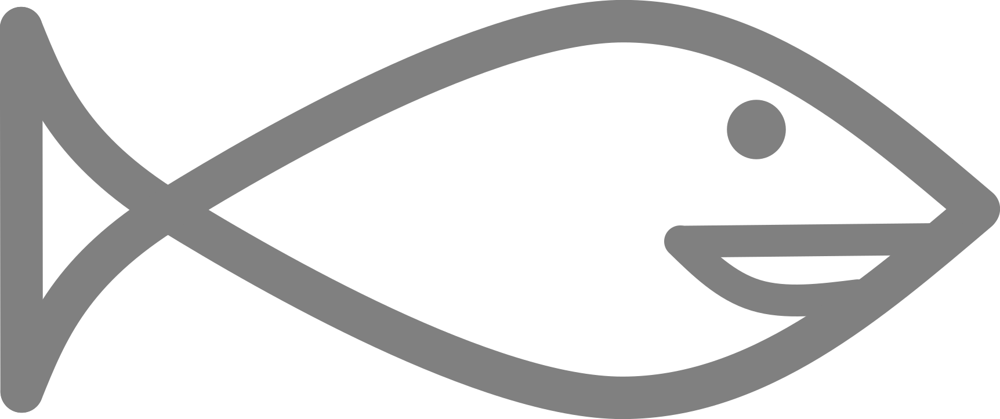

Leeswijzer
Opbouw
Elk hoofdstuk is op dezelfde wijze opgebouwd. Een hoofdstuk begint een samenvatting van de belangrijkste resultaten en een afbeelding van Vince Vis. Vervolgens wordt er een korte introductie gegeven op het thema van het hoofdstuk. Daarna wordt het thema verder uitgewerkt aan de hand van diverse figuren.
Vince Vis
Vince Vis is je gastheer in deze rapportage. Vince laat je in één oogopslag zien wat hij van de waterkwaliteit vindt. Gaat het slecht met de waterkwaliteit, dan is Vince verdrietig; Vince is blij als het goed gaat. Iets ertussen in kan natuurlijk ook.

 



Hoi! Ik ben Vince Vis!
Iconen
In de samenvatting van ieder hoofdstuk worden gekleurde iconen gebruikt. De kleuren geven aan of het om iets positiefs of iets negatiefs gaat.
-
Een blauw icoon is positief.
-
Een oranje icoon is negatief.
-
Een grijs icoon is neutraal.
Weergave en navigatie
Deze rapportage kan op verschillende digitale apparaten worden gelezen, maar de rapportage wordt het beste weergegeven op een groot scherm.
- Met de pijltjestoetsen kan door de rapportage worden gebladerd.
- Met de toets [S] kan de inhoudsopgave aan de zijkant worden verborgen of getoond.
- Met de toets [F] kan in de rapportage worden gezocht.
- In de menubalk aan de bovenzijde kunnen een aantal instellingen worden gewijzigd (zie onderstaand screenshot).
Interactiviteit
Diverse kaarten en grafieken zijn interactief. Als dit het geval is dan wordt dit aangegeven in de tekst bij het figuur. Door met de muis over de figuren bewegen of te klikken/tikken wordt aanvullende detailinformatie getoond.
HOME